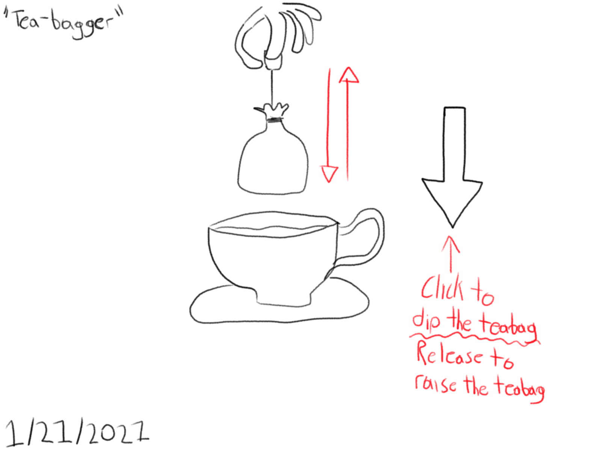

Hide and Seek
Ideation
For my project, I interviewed my fellow classmate, Pierce de Jong. When I asked him about what brought him delight, he told me that what brings him delight is his morning routine. He wakes up, gets showered, has breakfast, and then he makes himself some tea as he watches the news. The interview quickly spiralled into a focus on his tea making process, which is his favorite part of his morning routine. He explained to me about how he loves making black tea for himself. Due to its taste, but also due to the process itself. He explained to me about how the process is very specific and is easy to mess up, but the feeling of accomplishment is immense when it’s pulled off correctly. For my project, I wanted to replicate this sense of accomplishment when making tea in order to bring Pierce some delight.

My project is “Tea-Bagger”. A website where the user can press the button to dip a tea bag into a cup of tea. Holding the button down will keep the tea bag in the tea, and releasing it will bring it back out of the to a resting position. I went through a lot of different ideas when trying to come up with a one-button project that could encapsulate the delight that Pierce’s morning routine brought to him. This was the sketch that I ended up selecting:
It was simple, to the point, and achievable with my low level of knowledge and skill when it comes to JavaScript and HTML. I went through a couple of different ideas, but I ended up going with a combination of the idea above and this sketch below:

This website is made to be used on a desktop or tablet in full screen. I fear that the effect may break if it is used on a mobile device or on a resized window.
Sketches
Initial Sketches


Focused Sketches